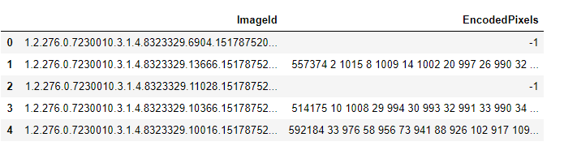
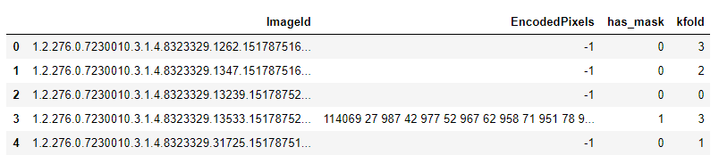

Top 100 solution - SIIM-ACR Pneumothorax Segmentation
In this blog post, we will looking at Image Segmentation based problem in Pytorch with SIIM-ACR Pneumothorax Segmentation competition serving as a useful example and create a solution that will get us to the top-100 leaderboard position on Kaggle.
1 Introduction
This week I spent most of my time implementing a solution for SIIM-ACR Pneumothorax Segmentation Kaggle competition and in today’s blog post, we will looking at how to work on Image Segmentation based problems in Pytorch with this competition serving as a useful example.
This blog post assumes the reader to have some idea about Image Segmentation, U-Net and PyTorch.
This post is based on a “code-first” approach with an aim to provide a reproducible training script that could then be used for other projects or Kaggle competitions. We train the model using pure PyTorch.
For a complete working notebook to follow along step-by-step refer here.
First, we download the dataset from Kaggle and convert the .dcm files to .png images for both masks and radiography images. Next, we create a PyTorch Dataset that returns the image and mask as a dictionary. Finally, we create the model using the wonderful Pytorch Image Segmentation library by Pavel Yakubovskiy(https://github.com/qubvel). Once we have the model, we create our training and validation scripts and train it using ComboLoss that was also used by the competition winner - Anuar Aimoldin. Winning solution can be referenced here.
While I found lots of blog posts showing Image Segmentation using the wonderful fastai library, there were fewer blog posts that attempted to do this task using pure Pytorch. I try the latter, because I have done the former many times and want to understand the minor details of training an Image Segmentation model in PyTorch. While it was much harder than training a model in fastai, getting stuck in problems helped me further expand my understanding on Image Segmentation.
Using pure PyTorch and some help from existing scripts, I was able to create a working solution that then landed in top-100 position on the private leaderboard with a dice score of 0.8421.
With that being said, let’s get started and look at the code pieces required to create such a solution step-by-step.
2 Problem Statement
2.1 What is Image Segmentation?
Before we look at what we are trying to solve in SIIM-ACR Competition, let’s first look at Image Segmentation. Image segmentation can also be thought of as pixel-wise classification where, for each pixel in the input image, we are predicting whether it is a part of the segmentation mask or not. We predict 1 if we think the pixel is a part of the segmentation mask and 0 otherwise.

Let’s say we have a 8x8 image, therefore as shown in fig-1, the idea is to predict a label - 0 or 1 for each pixel in the input image. This is precisely what Image Segmentation is.
2.2 SIIM-ACR Overview
For the SIIM-ACR Competition, the competitors were asked to build an image-segmentation model that can classify and segment pneumothorax. From the description on Kaggle for SIIM-ACR Competition:
In this competition, you’ll develop a model to classify (and if present, segment) pneumothorax from a set of chest radiographic images.
Specfically, given a chest radiographic image (fig-2 left), the idea is to predict a mask that shows the position of pneumothorax in an image (fig-2 right).

Now that we have looked at what we are trying to solve, let’s start with building our solution.
3 Preparing the Dataset
The first step is almost always getting the data ready. In the competition, the data has been provided as .dcm files. .dcm is short for DICOM format. DICOM is standard image format for medical-imaging information and related data. It consists of the image and associated metadata of the patient such as sex, age etc as well. Don’t worry if you haven’t seen DICOM before, there’s always a first-time.
I first learned about it through Kaggle too - specifically, RSNA Intracranial Hemorrhage Detection. There’s also this wonderful Some DICOM gotchas to be aware of (fastai) Kaggle notebook by none other than Jeremy Howard himself that serves as an excellent introduction to DICOM format.
Also, fastai library, has a medical submodule that makes it really easy to interact with .dcm files.
For us, we simply download the files from Kaggle first, and then re-use the prepare_png.py script by SIIM-ACR competition winner - Anuar Aimoldin. Let’s see how.
3.1 Downloading the .dcm files and converting to .png
The following lines of code will first download the dataset from Kaggle - this includes all .dcm files for stage-two of the competition including train and test folders. Next, the prepare_png.py script extracts the pixel information (or simply said “the image”) from the .dcm file, and stores the image as .png file in the output directory.
export OUTPUT_DIR='<path_to_output_dir>'
mkdir siim-acr && cd siim-acr
mkdir data && cd data
kaggle datasets download -d seesee/siim-train-test
unzip siim-train-test.zip
mv siim/* .
rmdir siim
mkdir ../src/ && cd ../src
git clone https://github.com/sneddy/pneumothorax-segmentation
python pneumothorax-segmentation/unet_pipeline/utils/prepare_png.py -train_path ../data/dicom-images-train/ -test_path ../data/dicom-images-test/ -out_path $OUTPUT_DIR -img_size 512 -rle_path ../data/train-rle.csvRunning the above, should create a folder siim-acr in your current directory that has the following structure:
├── data
│ ├── dataset512
│ ├── dicom-images-test
│ └── dicom-images-train
└── src
└── pneumothorax-segmentationThe dicom-images-train and dicom-images-test directory consist of all the .dcm files provided by Kaggle. The dataset512 consists of all the .png files that have been extracted from the .dcm files. This includes train image files and also label masks extracted as .png images. pneumothorax-segmentation is the GitHub repo that contains the prepare_png.py script.
Therefore, now that our data has been downloaded and all files converted to .png images, we are ready to start building our Dataset class.
3.2 PyTorch Dataset
In PyTorch, a Dataset class almost always returns the image and label. Since, this is an image segmentation task, the label, in this case is also an image - specifically the image of the mask as in fig-2 (right).
One thing I didn;t mention in the previous section, is that when we downloaded the files, we were also provided with a train-rle.csv file which consists of two columns - ImageId and EncodedPixels.

Each row consists of an ImageId and EncodedPixels - which are the 512x512 masks as in fig-2 with run-length-encoding to keep the size of the .csv file small. You can read more about run-length-encoding here.
So, to create the dataset, we read this .csv file as rle_df, and store it to df attribute of the Dataset class. In order to get an item from the dataset, we could get the corresponding image_id based on index i. Once we have the image_id, we could get the img_path and mask_path too and return the image and mask after applying the augmentations if present. If the augmentations are present, this class returns two image and mask tensors of shape (3, 512, 512) and (1, 512, 512) respectively or numpy arrays of the same shape otherwise.
class Dataset():
def __init__(self, rle_df, image_base_dir, masks_base_dir, augmentation=None):
self.df = rle_df
self.image_base_dir = image_base_dir
self.masks_base_dir = masks_base_dir
self.image_ids = rle_df.ImageId.values
self.augmentation = augmentation
def __getitem__(self, i):
image_id = self.image_ids[i]
img_path = os.path.join(self.image_base_dir, image_id+'.png')
mask_path = os.path.join(self.masks_base_dir, image_id+'.png')
image = cv2.imread(img_path, 1)
mask = cv2.imread(mask_path, 0)
# apply augmentations
if self.augmentation:
sample = {"image": image, "mask": mask}
sample = self.augmentation(**sample)
image, mask = sample['image'], sample['mask']
return {
'image': image,
'mask' : mask
}
def __len__(self):
return len(self.image_ids)3.3 Five-fold splits
One thing we haven’t done yet is to create train-val splits. This is standard for training any model. For this competition, we will doing a five-fold stratified split using StratifiedKFold from sklearn.
RLE_DF = pd.read_csv('<path_to_train_rle.csv'>)
kf = StratifiedKFold()
if CREATE_FIVE_FOLDS:
RLE_DF['has_mask'] = 0
RLE_DF.loc[RLE_DF.EncodedPixels!='-1', 'has_mask'] = 1
RLE_DF['kfold']=-1
for fold, (train_index, test_index) in enumerate(kf.split(X=RLE_DF.ImageId, y=RLE_DF.has_mask)):
RLE_DF.loc[test_index, 'kfold'] = fold
RLE_DF.to_csv('<path_to_target_file.csv>', index=False)Running the above script creates a new .csv file which looks something like:

As can be seen, each image has been assigned to a specific fold. Thus, all our data has been divided into five folds. Once we have this, then getting the train and validation dataframes is as simple as running:
TRAIN_DF = RLE_DF.query(f'kfold!={FOLD_ID}').reset_index(drop=True)
VAL_DF = RLE_DF.query(f'kfold=={FOLD_ID}').reset_index(drop=True)
len(TRAIN_DF), len(VAL_DF)
>> (10364, 2590)Therefore, we have split the train-rle.csv into training and validation splits with 10,364 files in training split and 2590 files in validation split.
3.4 Train and Val Datasets and Dataloaders
Now that we have our train and validation splits, creating train and validation datasets and dataloaders is a piece of cake.
TRAIN_BATCH_SIZE = 8
VALID_BATCH_SIZE = 16
# datasets
train_dataset = Dataset(TRAIN_DF, '<path_to_train_png_image_dir>', '<path_to_train_png_masks_dir>')
val_dataset = Dataset(VAL_DF, '<path_to_train_png_image_dir>', '<path_to_train_png_masks_dir>')
# dataloaders
train_dataloader = DataLoader(train_dataset, TRAIN_BATCH_SIZE,
shuffle=True, num_workers=4)
val_dataloader = DataLoader(val_dataset, VALID_BATCH_SIZE, shuffle=False, num_workers=4)We already have a Dataset class before, that accepts a DataFrame and returns image and mask numpy arrays or tensors based on augmentations. Since, we have not provided any augmentations so far, the returned values would be numpy arrays.
3.5 Train and Valid Augmentations
We could also add image augmentations by simply passing augmentations to the Dataset class.
Let’s first define train and validation augmentations using the brilliant albumentations library.
import albumentations as albu
# Train transforms
TRN_TFMS = albu.Compose([
albu.HorizontalFlip(),
albu.Rotate(10),
albu.Normalize(),
ToTensor(),
])
# Test transforms
VAL_TFMS = albu.Compose([
albu.Normalize(),
ToTensor(),
])The train transforms add random horizontal flipping, random rotation and also normalize the image and mask to have values between (0, 1) instead of (0, 255). We also convert the numpy arrays to tensor using ToTensor() method in albumentations.
The validation transform only normalizes and converts the numpy arrays to tensors.
Now that we have defined the augmentations, we can create the datasets and dataloaders like so:
TRAIN_BATCH_SIZE = 8
VALID_BATCH_SIZE = 16
# datasets
train_dataset = Dataset(TRAIN_DF, '<path_to_train_png_image_dir>', '<path_to_train_png_masks_dir>', augmentation=TRN_TFMS)
val_dataset = Dataset(VAL_DF, '<path_to_train_png_image_dir>', '<path_to_train_png_masks_dir>', augmentation=VAL_TFMS)
# dataloaders
train_dataloader = DataLoader(train_dataset, TRAIN_BATCH_SIZE,
shuffle=True, num_workers=4)
val_dataloader = DataLoader(val_dataset, VALID_BATCH_SIZE, shuffle=False, num_workers=4)Great! So far so good. Until now we have created the Dataset class that accepts a DataFrame and returns image and mask as a Python dictionary. We have also defined some train and validation augmentations and added them to training and validation datasets.
3.6 Visualize
Let’s visualize some images now. First, we create simple helper functions from torchvision examples like so:
def matplotlib_imshow(img, one_channel=False):
fig,ax = plt.subplots(figsize=(10,6))
ax.imshow(img.permute(1,2,0).numpy())
def visualize(**images):
images = {k:v.numpy() for k,v in images.items() if isinstance(v, torch.Tensor)} #convert tensor to numpy
n = len(images)
plt.figure(figsize=(16, 8))
image, mask = images['image'], images['mask']
plt.imshow(image.transpose(1,2,0), vmin=0, vmax=1)
if mask.max()>0:
plt.imshow(mask.squeeze(0), alpha=0.25)
plt.show()And now visualizing an image with mask is as simple as:
# plot one image with mask
visualize(**train_dataset[1])
And to visualize multiple train images, we could do something like:
images, masks = next(iter(train_dataloader))['image'], next(iter(train_dataloader))['mask']
img_grid = torchvision.utils.make_grid(images[:9], nrow=3, normalize=True)
matplotlib_imshow(img_grid)
As can be seen from fig-3, some images are rotated, some are flipped - this is due to the train image augmentations. This way, our model sees a slightly different version of the same image every time in an epoch and will therefore be able to generalize better.
Now, that our dataset and dataloaders with image augmentations are done, we are ready to look into model building, training and validation.
4 Model - Training and Validation
To create our U-Net based model, we will be using the wonderful Segmentation Models library in PyTorch by Pavel Yakubovskiy. I promise to do a future blog post on creating a U-Net structure from scratch with a ResNet encoder branch, but for simplicity, for this introductory post, using the Segmentation Models library is a much easier option. If you’re keen to create a U-Net architecture from scratch, here is an excellent video by Abhishek Thakur.
Thanks to the library, creating our segmentation model architecture is as simple as:
import segmentation_models_pytorch as smp
model = smp.Unet(
encoder_name='se_resnext50_32x4d',
encoder_weights='imagenet',
classes=1,
activation=None,
)Usually, there is a Sigmoid activation U-Net, but in our case, we do not add any activation and set it to None because the Sigmoid activation is already a part of the loss function that we use to train the model.
Given an input batch of images of size (8, 3, 512, 512) the model outputs masks of batch dimensions (8, 1, 512, 512) which represents the predicted segmentation masks for each of the 8 images.
Usually, one of the common loss functions for Image Segmentation is pixel wise Cross Entropy but for our introductory post today we will be using the same loss function as the winner of the competition.
4.1 Loss Function
import sys; sys.path.append('<path to `pneumothorax-segmentation/unet_pipeline/`>')
from Losses import ComboLoss
criterion = ComboLoss(**{'weights':{'bce':3, 'dice':1, 'focal':4}})This loss function is a combination of Binary Cross Entropy, Dice Loss and Focal Loss. I have written about Focal Loss before here.
From my understanding, we use a combination loss for stable training. Since the evaluation metric is dice, we are using dice loss here. We use bce for pixel wise comparison between predictions and ground truth mask, and focal loss due to the high class imbalance - the actual mask is only a tiny part of the whole image. I again promise to do a future blog post on the various loss functions, but for now, for simplicity we simply re-use the ComboLoss to train our model with (3, 1, 4) weights to stabilize training.
Let’s also quickly define the optimizer and scheduler.
import torch
optimizer = torch.optim.Adam(model.parameters(), lr=1e-4)
scheduler = torch.optim.lr_scheduler.MultiStepLR(
optimizer, milestones=[3,5,6,7,8,9,10,11,13,15], gamma=0.75)Great, so far, we have our model, loss function and also the optimizer and scheduler defined. We are now ready to train our model.
4.2 Model Training
I reused the same training loop as in the ISIC competition below:
class AverageMeter:
"keep record of batch scores and loss"
def __init__(self):
self.val = 0
self.avg = 0
self.sum = 0
self.count = 0
def reset(self):
self.val = 0
self.avg = 0
self.sum = 0
self.count = 0
def update(self, val, n=1):
self.val = val
self.sum += val * n
self.count += n
self.avg = self.sum / self.count
def train_one_epoch(train_loader, model, optimizer, loss_fn, accumulation_steps=1, device='cuda'):
losses = AverageMeter()
model = model.to(device)
model.train()
if accumulation_steps > 1:
optimizer.zero_grad()
tk0 = tqdm(train_loader, total=len(train_loader))
for b_idx, data in enumerate(tk0):
for key, value in data.items():
data[key] = value.to(device)
if accumulation_steps == 1 and b_idx == 0:
optimizer.zero_grad()
out = model(data['image'])
loss = loss_fn(out, data['mask'])
with torch.set_grad_enabled(True):
loss.backward()
if (b_idx + 1) % accumulation_steps == 0:
optimizer.step()
optimizer.zero_grad()
losses.update(loss.item(), train_loader.batch_size)
tk0.set_postfix(loss=losses.avg, learning_rate=optimizer.param_groups[0]['lr'])
return losses.avgThe above training loop is a basic one with possible gradient accumulation due to the small batch size in Image Segmentation based problems. I personally trained my models without gradient accumulation, but you could very well train your models by passing in accumulation_steps=N where N is the number of times you want to accumulate the gradients, thereby, increasing the batch size.
The train_one_epoch function accepts a dataloader, model, optimizer and loss_fn. We first move the model to cuda and put the model in train mode. Next, we iterate over the dataloader to get images and masks and move them to cuda as well.
Finally, we pass the batch of images to get predictions. Remember the output size is (8, 1, 512, 512) for three channel input images of height and width 512 and batch size 8. Once we have the predictions, as is standard for any training loop, we can calculate the loss and backpropogate to update the model weights. Finally, we also display the average loss in the training progress bar using tqdm.
To train the model we can simply run:
train_loss = train_one_epoch(train_dataloader, model, optimizer, criterion)4.3 Model Validation
Hardly ever would one just be concerned with model training. It is imperative to have a good validation step to check model performance. In this step we create the model validation loop which is similar to the training loop. s
def evaluate(valid_loader, model, device='cuda', metric=dice_metric):
losses = AverageMeter()
model = model.to(device)
model.eval()
tk0 = tqdm(valid_loader, total=len(valid_loader))
with torch.no_grad():
for b_idx, data in enumerate(tk0):
for key, value in data.items():
data[key] = value.to(device)
out = model(data['image'])
out = torch.sigmoid(out)
dice = metric(out, data['mask']).cpu()
losses.update(dice.mean().item(), valid_loader.batch_size)
tk0.set_postfix(dice_score=losses.avg)
return losses.avgThe above validation loop accepts a valid dataloader, trained model some metric to check model performance. It first moves the model to GPU, and puts the model in eval mode. Next we iterate over the dataloader to get the images and masks and pass the images through the model to get mask predictions. Finally, we take the sigmoid to convert raw logits to be in range (0, 1). Finally, we can calculate the dice score and display it in the validation progress bar with tqdm.
5 Conclusion
I hope that today, I was able to provide a good introductory and reporoducible script to train Image Segmentation based models. This was also my first experience with training image segmentation models and hope to write more about Unet architecture, loss functions and review image segmentation research papers in the future.
For a complete working notebook with a submission script to Kaggle and pretrained models, refer here. Running the script should take around 2 minutes on a P100.
As usual, in case I have missed anything or to provide feedback, please feel free to reach out to me at @amaarora.
Also, feel free to subscribe to my blog here to receive regular updates regarding new blog posts. Thanks for reading!
6 Credits
We made use of prepare_png.py script from Anuar Aymoldin’s 1st place solution and also directly used the loss function.
The model was created using segmentation_models.pytorch library.